Hasta ahora todos los modelos fueron supervisados (KNN, CART, Random Forest, Naive Bayes): había una columna respuesta (¿pagó?, ¿compró?, ¿cuánto gastó?) y el modelo aprendía a predecirla. Y podíamos medir si acertaba.
Hoy no hay respuesta. Solo tenemos las características de cada caso y buscamos estructura: grupos, patrones, resúmenes. No hay "acierto": si sirve o no lo decide el negocio.
Las dos primeras agrupan filas (clientes, países). PCA resume columnas (variables).
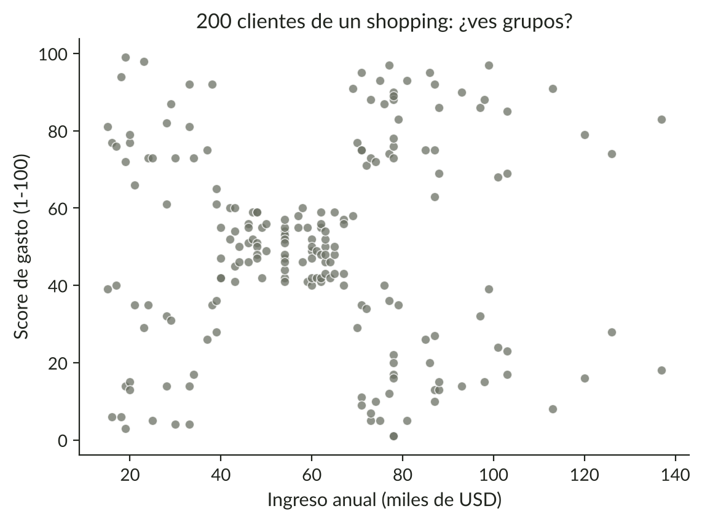
Somos marketing de un shopping. Por cada cliente de la tarjeta de fidelidad tenemos su ingreso anual y un score de gasto (1 a 100).
Queremos armar campañas para distintos tipos de clientes, pero nadie nos dijo cuáles son.
¿Cuántos grupos ves?
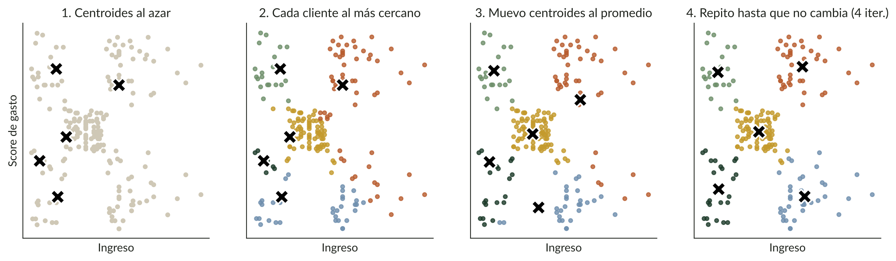
Elegimos K y tiramos K centroides al azar. Cada cliente se asigna al centroide más cercano, cada centroide se mueve al promedio de sus clientes, y repetimos hasta que nada cambia.
K-means busca los grupos que minimizan la inercia:
n_init=10).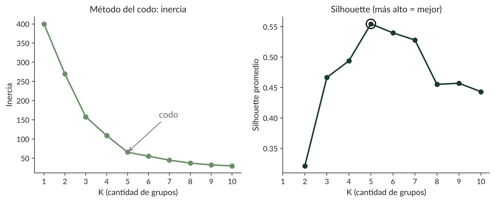
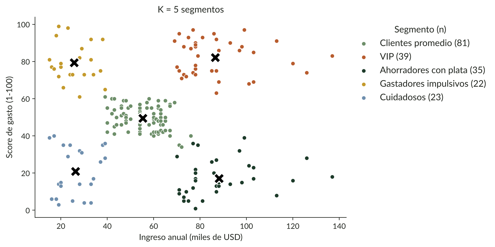
K-means devuelve "cluster 0, 1, 2...". Mirando el centroide de cada grupo le ponemos un nombre que el equipo de marketing entienda.
La edad no se usó para agrupar, y aun así distingue a los grupos: los "impulsivos" son los más jóvenes. Eso es un hallazgo.
| Segmento | Perfil | Acción |
|---|---|---|
| VIP | Ingreso alto, gasta mucho | Fidelizar, eventos exclusivos. No perderlos. |
| Ahorradores con plata | Ingreso alto, gasta poco | Mayor potencial: ¿por qué no compran acá? |
| Gastadores impulsivos | Ingreso bajo, gasta mucho, jóvenes | Promos y cuotas. Ojo con el riesgo crediticio. |
| Cuidadosos | Ingreso bajo, gasta poco | Descuentos puntuales, baja prioridad. |
| Promedio | El grupo más grande | Comunicación masiva estándar. |
01_kmeans_clientes.ipynb
Una fintech argentina quiere expandirse. Antes de estudiar mercado por mercado, quiere saber:
¿Qué países se parecen entre sí?
Arranco con cada país solo y voy juntando de a dos
a los más parecidos, hasta que queda un solo grupo.
Veámoslo con 7 puntos, paso por paso.
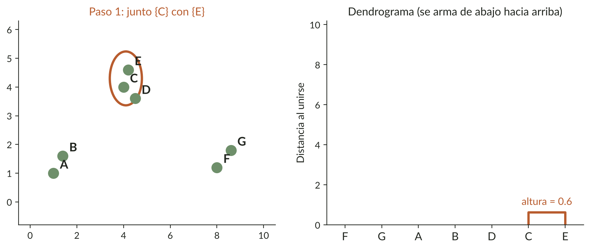
Los dos puntos más cercanos (C y E) se juntan primero. En el árbol aparece una "U" bajita: eran muy parecidos.
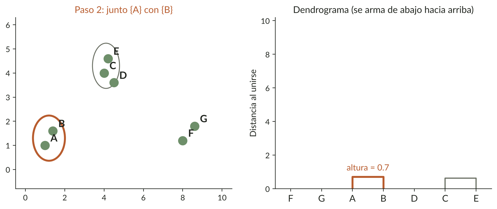
Siguiente par más cercano: A y B. Otra "U" bajita.
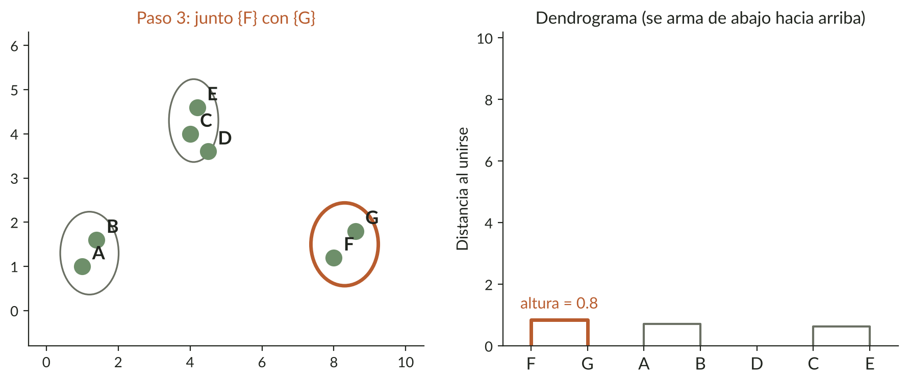
F y G. Ya tenemos tres grupitos bien apretados.
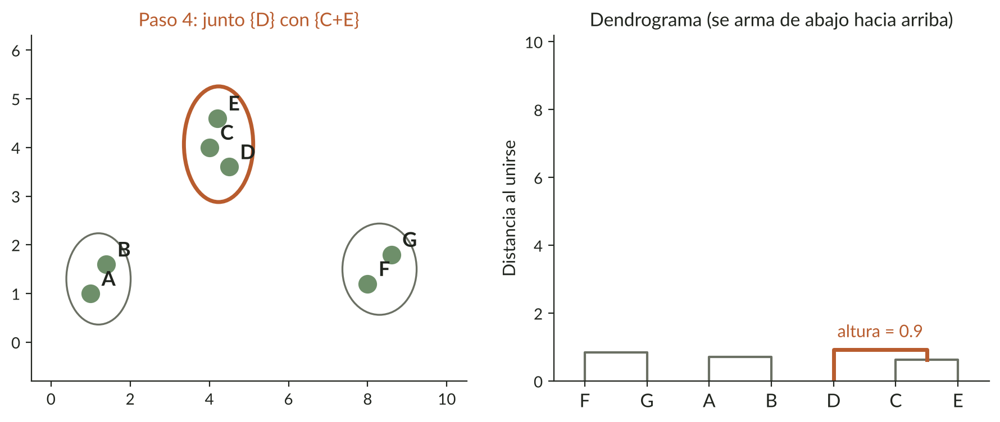
D se suma al grupo de C y E. Quedan 3 grupos: {A, B}, {C, D, E} y {F, G}.
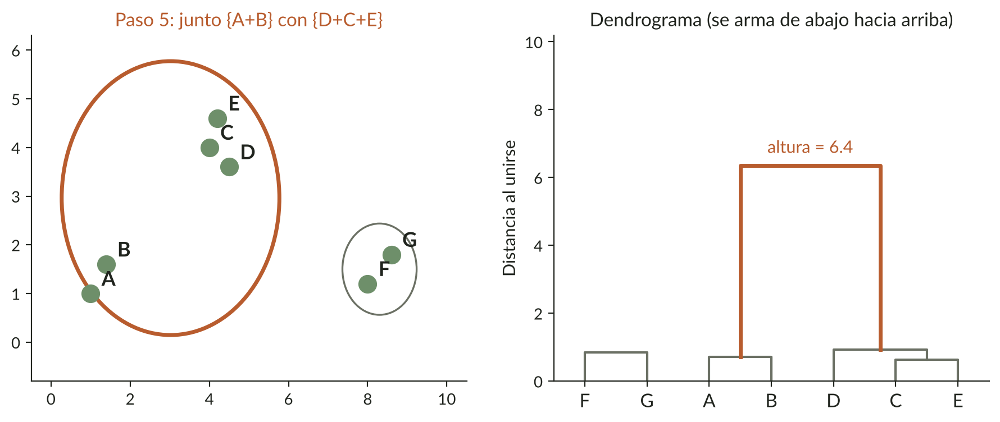
Ahora sí hay que juntar grupos lejanos: la "U" sube mucho. Ese salto es la señal de que estamos mezclando cosas distintas.
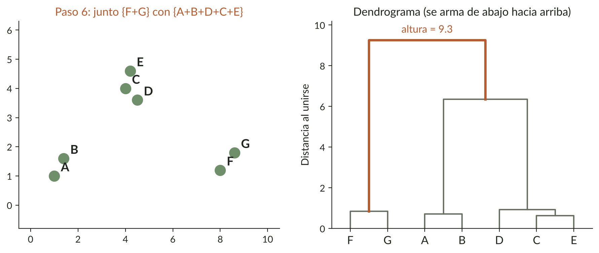
Última unión: todo queda en un solo grupo. El árbol está completo.
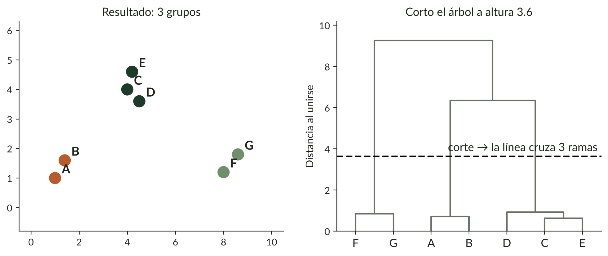
Trazo una línea horizontal: la cantidad de ramas que cruza es la cantidad de grupos. Cortando por debajo del gran salto quedan 3 grupos que tienen sentido.
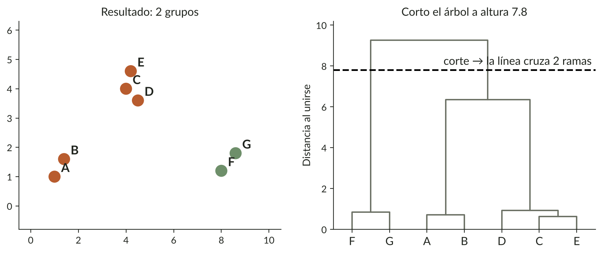
Si corto más arriba quedan 2 grupos más "gruesos". ¿Cuál conviene? Depende de la pregunta de negocio.
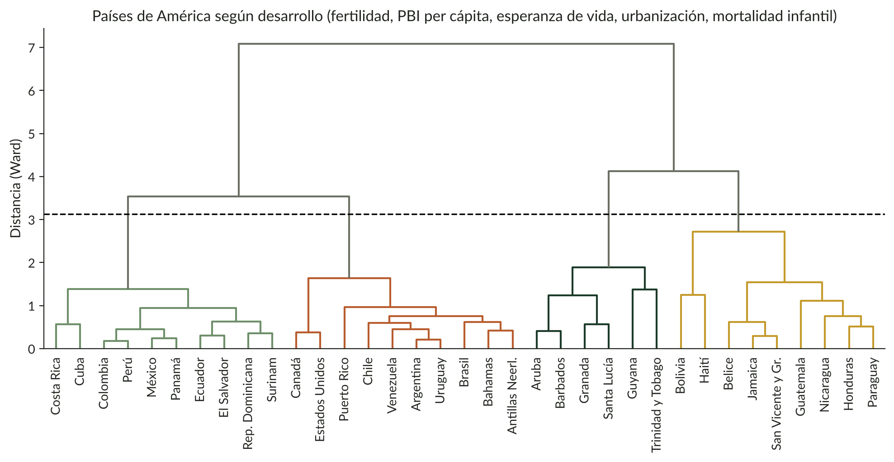
Entre dos países es fácil: la misma distancia en línea recta que en K-means. Pero cuando ya tengo grupos, hay que decidir cómo compararlos. A eso se le dice linkage:
| Linkage | Mide la distancia entre grupos como... |
|---|---|
| single | los dos miembros más cercanos. Arma "cadenas": no sirve para segmentar. |
| complete | los dos miembros más lejanos. |
| average | el promedio de todas las distancias. |
| ward | junta los grupos que quedan más apretados (la misma idea que K-means). |
En la práctica usamos Ward. En la demo se ve qué pasa con los otros.
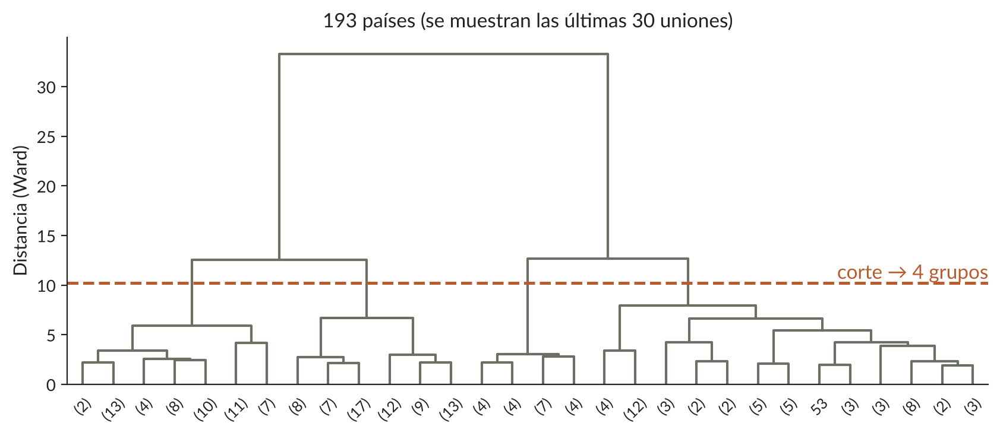
| Grupo (medianas) | Países | PBI p/c | Esp. vida |
|---|---|---|---|
| Alto desarrollo | 66 | 20.556 | 80,7 |
| Medio-alto | 55 | 4.496 | 77,3 |
| Medio-bajo | 53 | 1.240 | 64,4 |
| Bajo desarrollo | 19 | 451 | 53,1 |
Argentina queda en alto desarrollo, junto con Uruguay, Chile y buena parte de Europa.
| K-means | Jerárquico | |
|---|---|---|
| ¿Elijo K antes? | Sí | No: corto el árbol después |
| Resultado | Grupos + centroides | Árbol completo (dendrograma) |
| Cantidad de datos | Millones, sin problema | Hasta miles (es lento) |
| Cómo se explica | "Estos son los 5 perfiles" | "Mirá quién se parece a quién" |
| ¿Mismo resultado si lo corro de nuevo? | Depende del arranque | Sí, siempre |
02_jerarquico_paises.ipynb
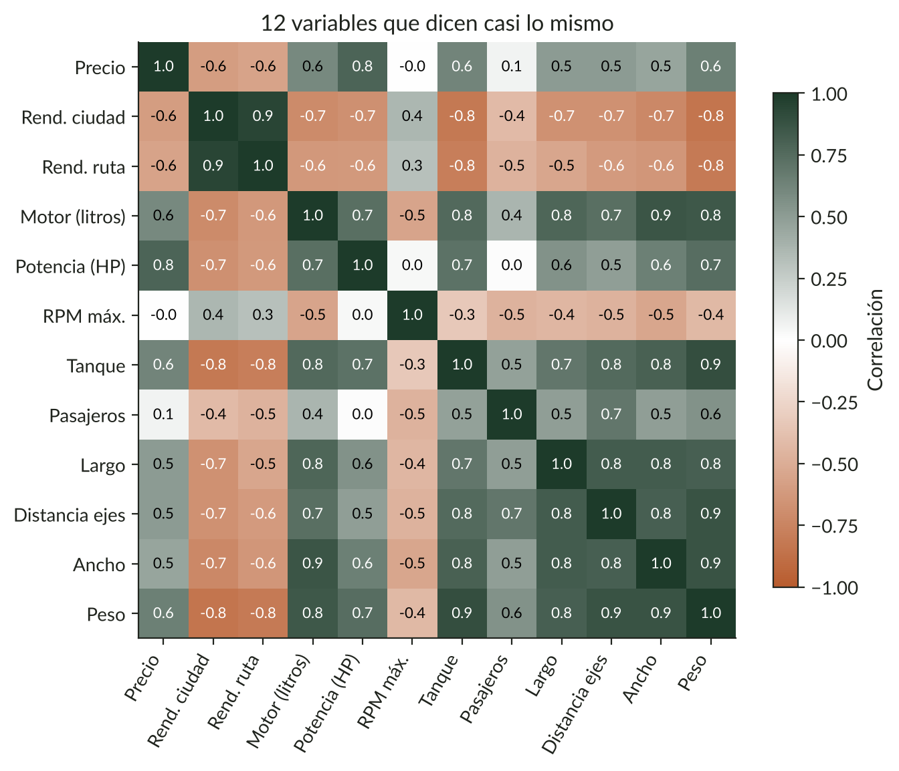
Trabajamos en una automotriz. Queremos ver cómo están posicionados los 93 modelos del mercado: ¿dónde hay competencia?, ¿hay huecos?
Tenemos 12 características por modelo, pero:
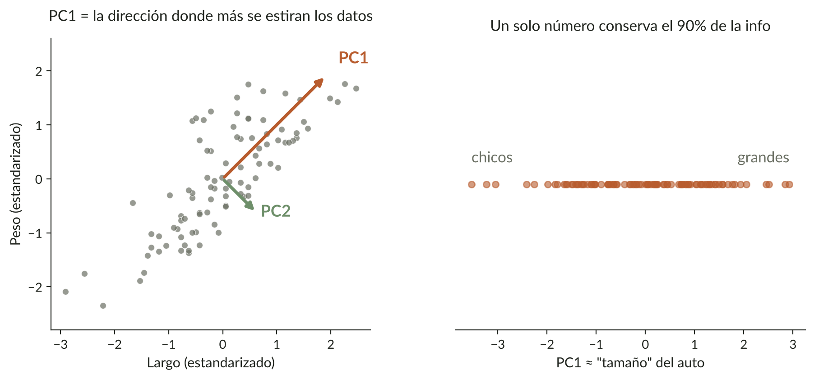
Largo y peso van juntos. Si giro los ejes y miro solo PC1, con un número conservo casi toda la información. Ese número es, en la práctica, el "tamaño" del auto.
Cada componente principal es una receta: una suma ponderada de las variables originales (estandarizadas).
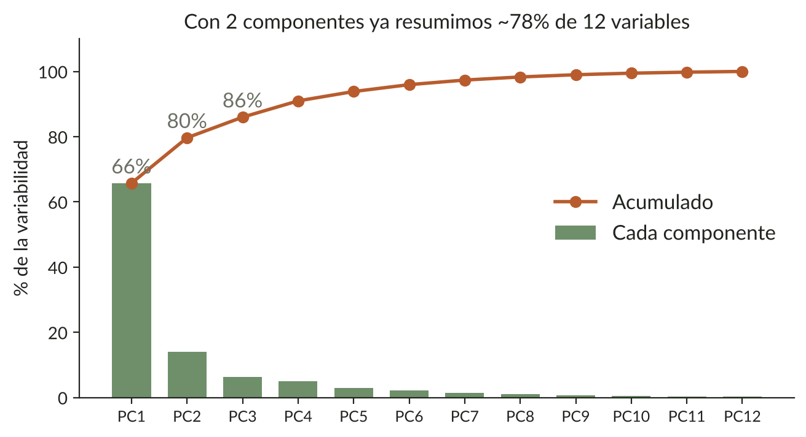
Mirar el acumulado: ¿con cuántas llego a 80–90%?
Para visualizar: 2 (o 3). Para modelar: las que hagan falta.
Acá, con 2 componentes ya resumimos ~80% de 12 variables.
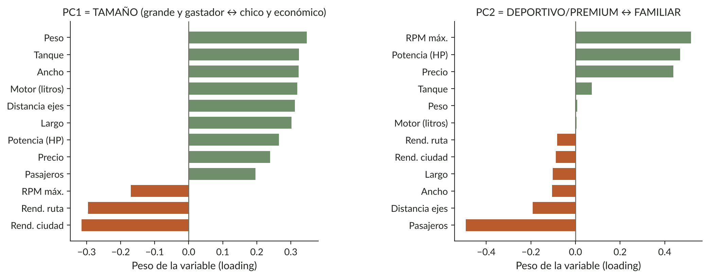
Mirando los loadings: PC1 = tamaño (todo lo "grande" suma, el rendimiento resta). PC2 = deportivo/premium vs. familiar (potencia y precio suman, pasajeros resta).
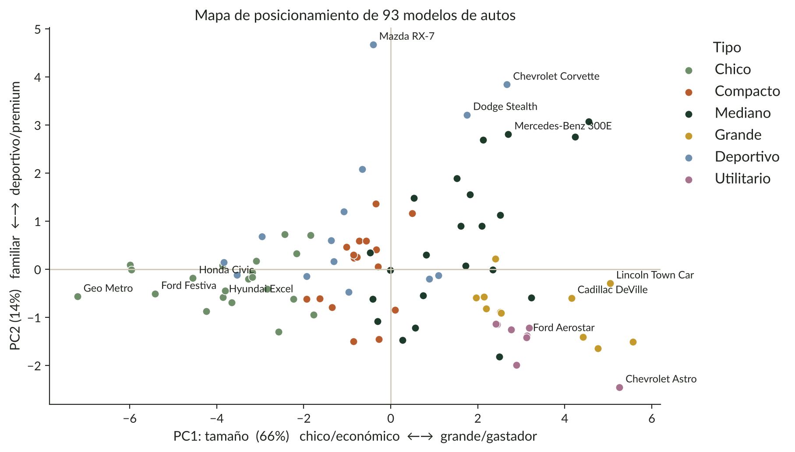
03_pca_autos.ipynb
| K-means | Jerárquico | PCA | |
|---|---|---|---|
| Hace | Agrupa filas en K grupos | Arma un árbol de parecidos | Resume columnas |
| Usalo para | Segmentar muchos clientes | Pocos casos, sin K claro | Mapas, índices, quitar redundancia |
| Decidís vos | K | Dónde cortar, linkage | Cuántas componentes |
| Siempre | Estandarizar · interpretar y ponerle nombre · validar con el negocio | ||
Se combinan: PCA para resumir → clustering sobre las componentes (bonus en la demo 3).